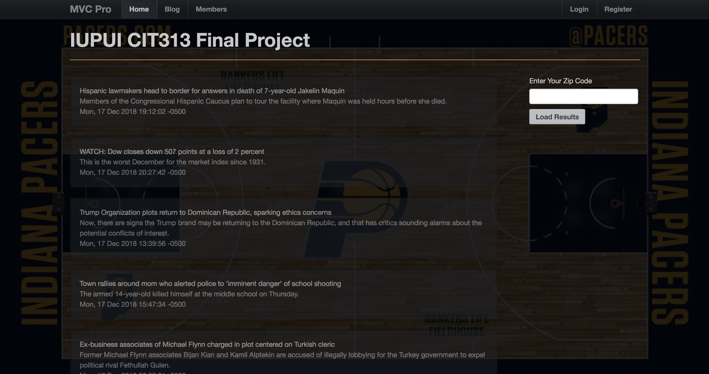
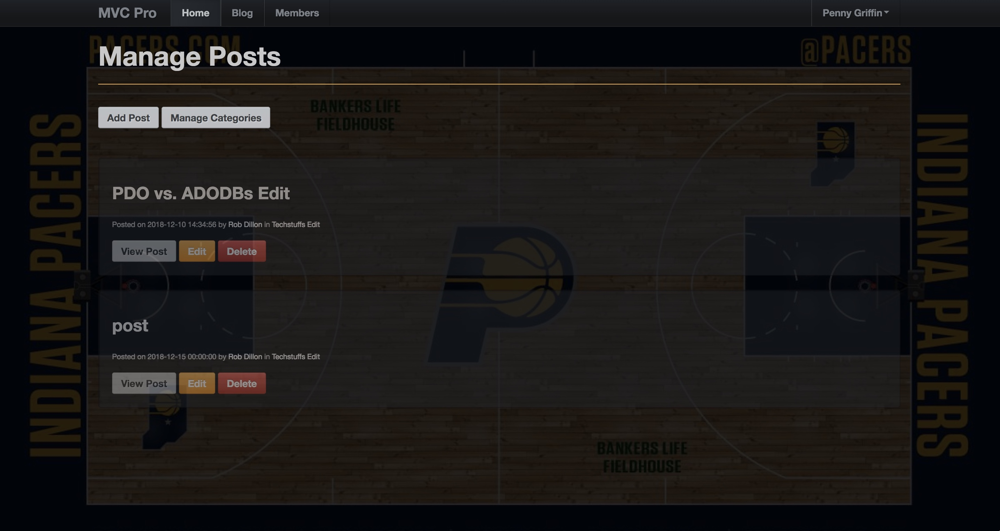
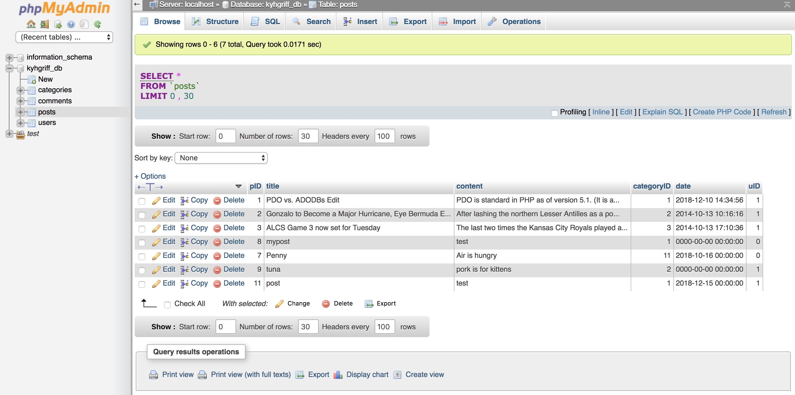

My Work
Pacers Blog
This is my final project I completed for my web development certificate and uses the MVC design pattern. The technologies used to create this amazing web application are:
Read the latest stories from abc.com
The top stories from abc.go.com are automatically populated on the homepage for your viewing pleasure.


Full CRUD Capability
My SQL
The web blog incorporates a MySQL database to save users, posts, and comments.
